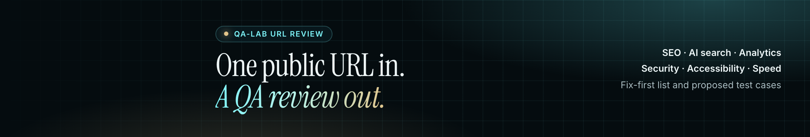
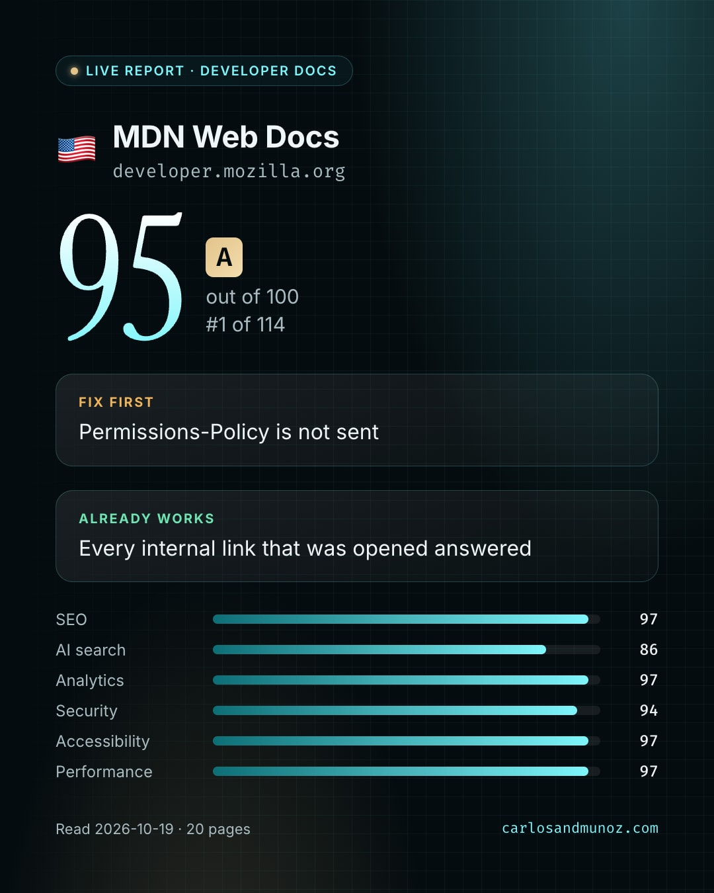
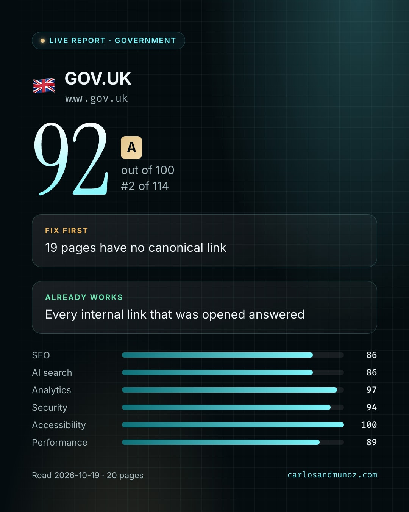
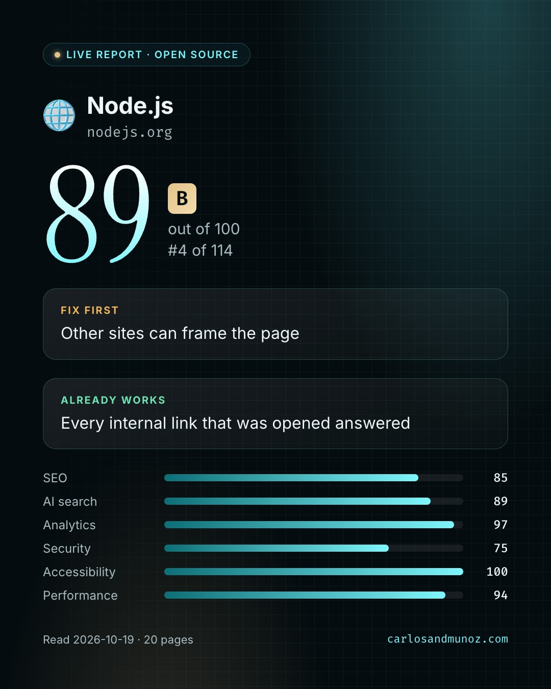
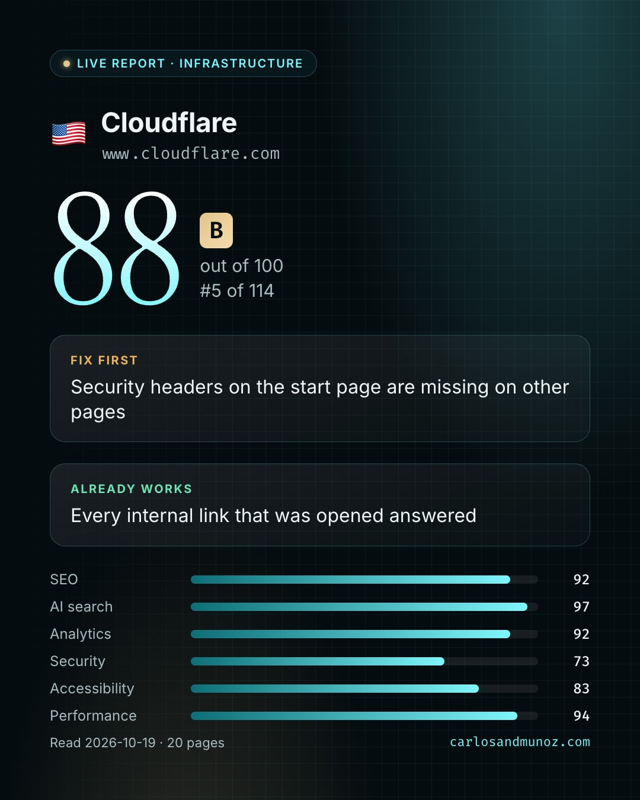
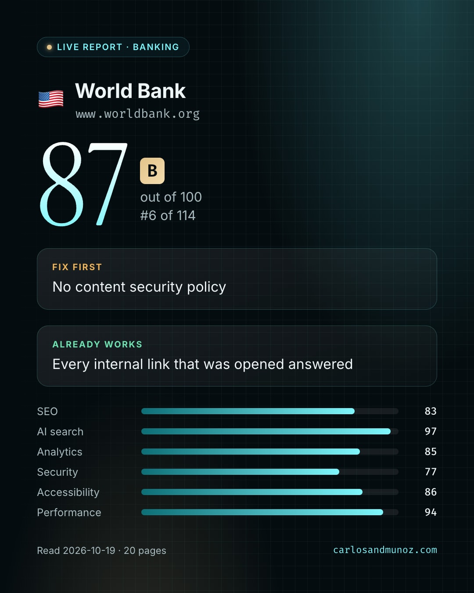

114 Live Reports · 2,227 pages · 11 countries · 26 sectors. Premium renews on 2026-11-19.

Tagline: One public URL in. A plain-language QA review out: SEO, AI search, analytics, security, accessibility, speed.
Button: Visit website → https://carlosandmunoz.com/qa-review.html?utm_source=linkedin&utm_medium=company_page&utm_campaign=premium-cta
Highlights:
Competitors: Pick up to nine pages that sell website audits or QA reviews to the same buyers. LinkedIn suggests similar pages in the competitor picker.
Testimonial: Leave off until a URL Review client gives a quote in their own words. Do not reuse CV testimonials here.
carousel.pdf · 7 pages

MDN Web Docs
GOV.UK
Node.js
Cloudflare
World Bank| Date | Time | Action | Where | Asset |
|---|---|---|---|---|
| 2026-10-21 | Upload the three cover slides as the dynamic cover, in order: promise, proof, handoff | Edit page > Banner | cover-promise.png cover-proof.png cover-handoff.png | |
| 2026-10-21 | Set the custom button to Visit websitehttps://carlosandmunoz.com/qa-review.html?utm_source=linkedin&utm_medium=company_page&utm_campaign=premium-cta | Edit page > Buttons | ||
| 2026-10-21 | Replace the tagline and the four highlights with the copy in page.json | Edit page > Page info | page.json | |
| 2026-10-21 | Add competitors for the insights tab | Analytics > Competitors | ||
| 2026-10-22 | 12:30 | Post the carousel PDF, then pin it in Featuredhttps://carlosandmunoz.com/qa-review.html?utm_source=linkedin&utm_medium=social&utm_campaign=premium-carousel | Page post | carousel.pdf |
| 2026-10-23 | Send this month's follow invitations to connections who work in QA, web, or marketing | Invite to follow | ||
| 2026-10-26 | Review who visited the page, competitor insights, and LinkedIn opens in admin; pin last week's best runs post in Featured | Analytics, Featured | ||
| 2026-11-02 | Review who visited the page, competitor insights, and LinkedIn opens in admin; pin last week's best runs post in Featured | Analytics, Featured | ||
| 2026-11-09 | Review who visited the page, competitor insights, and LinkedIn opens in admin; pin last week's best runs post in Featured | Analytics, Featured | ||
| 2026-11-16 | Review who visited the page, competitor insights, and LinkedIn opens in admin; pin last week's best runs post in Featured | Analytics, Featured | ||
| 2026-11-16 | Decide whether to keep Premium; export page analytics either way | Premium features > Manage subscription | ||
| 2026-11-18 | Last day to cancel before Premium renews on 2026-11-19 | Premium features > Manage subscription |